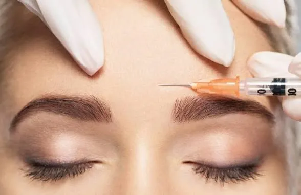
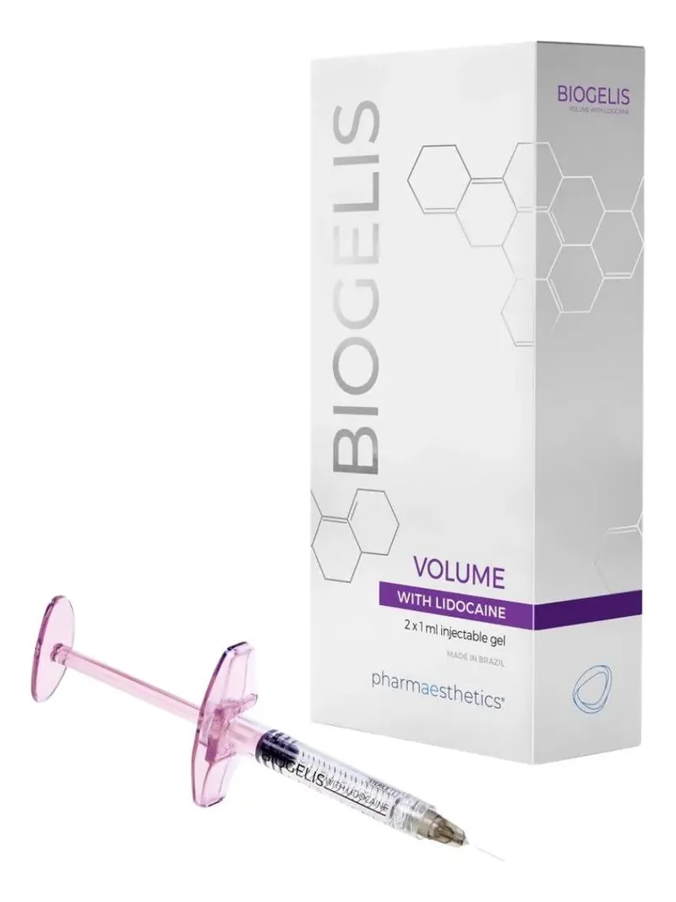
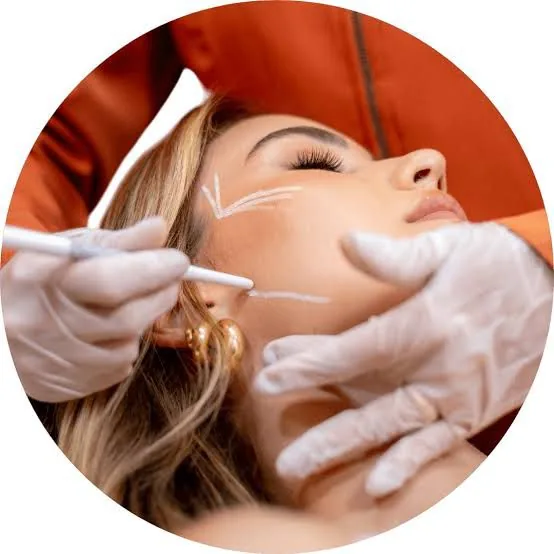
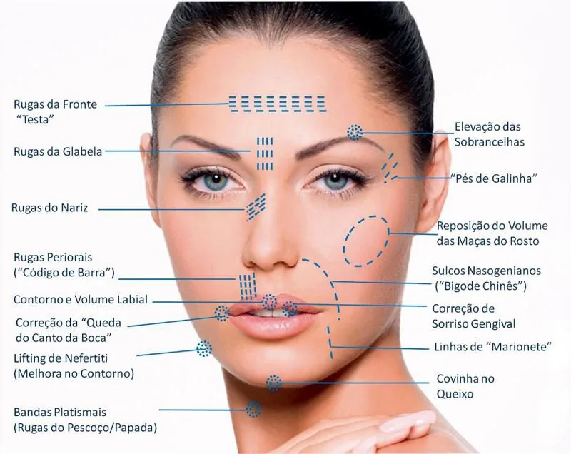
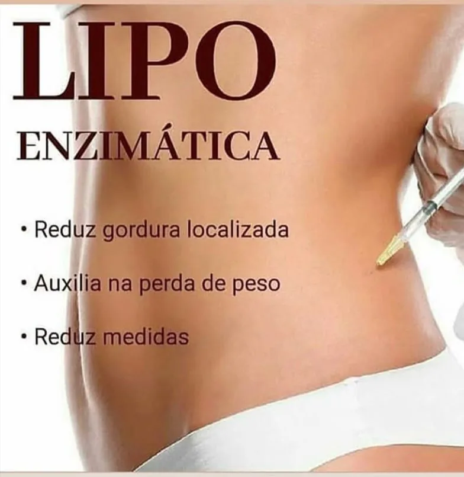
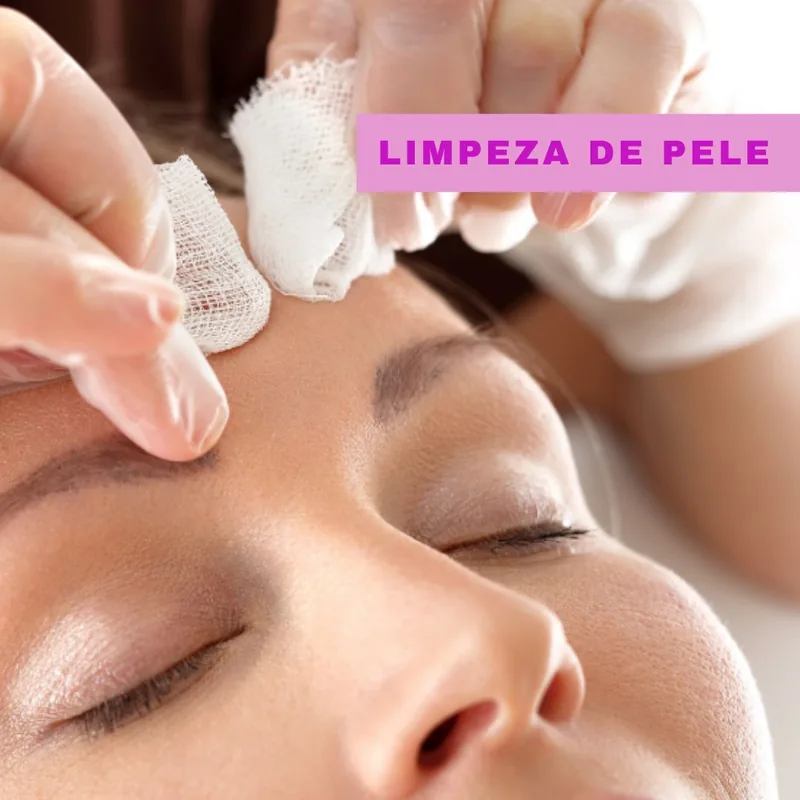
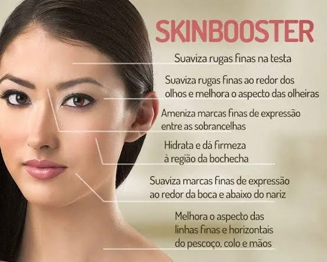

BÁRBARA AMORIM
Estética AvançadaDescubra a harmonia ideal entre ciência e elegância através de um catálogo de tratamentos exclusivos, desenhados sob medida para valorizar a sua essência.

Mapa AtivoToxina Botulínica (Botox)
O tratamento mais consolidado para a prevenção e atenuação das rugas dinâmicas (linhas de testa, glabela e pés de galinha). Ao relaxar de forma controlada a musculatura facial, devolvemos à pele um aspecto leve, suave e descansado.

Biogelis PremiumPreenchimento Facial
Utilizando o renomado ácido hialurônico, realizamos a reestruturação e devolução volumétrica da face de forma sutil. Ideal para esculpir os lábios, definir contornos de mandíbula e suavizar olheiras e o bigode chinês.

SustentaçãoBioestimuladores de Colágeno
Compostos de altíssima tecnologia que desencadeiam a síntese celular de novas fibras de sustentação pelo próprio organismo. Combatem a flacidez tecidual gradativamente, promovendo firmeza e espessura ideais para a pele.

Marcação 3DHarmonização Facial
Um planejamento estratégico global das necessidades faciais da paciente. Combinando de forma integrada toxina botulínica e preenchimento, realçamos os ângulos ideais e proporções do perfil com extrema sofisticação.

Lipo EnzimáticaEnzimas de Região Corporal
Aplicação de compostos metabólicos ativadores que promovem a dissolução localizada das células de gordura. O procedimento favorece a redução de medidas em áreas de alta resistência, como flancos e abdômen.

Protocolo LimpoLimpeza de Pele
Sessão profunda que engloba assepsia, vapor de ozônio para emoliência, extração higiênica manual de comedões, aplicação de alta-frequência antisséptica e máscara calmante final para reequilibrar a derme.

Multi-AçãoSkinbooster
Hidratação ultraprofunda com ácido hialurônico fluido associado a nutrientes essenciais. Restabelece a firmeza interna da derme, suavizando rugas finas de testa e colo, devolvendo brilho e maciez incomparáveis.